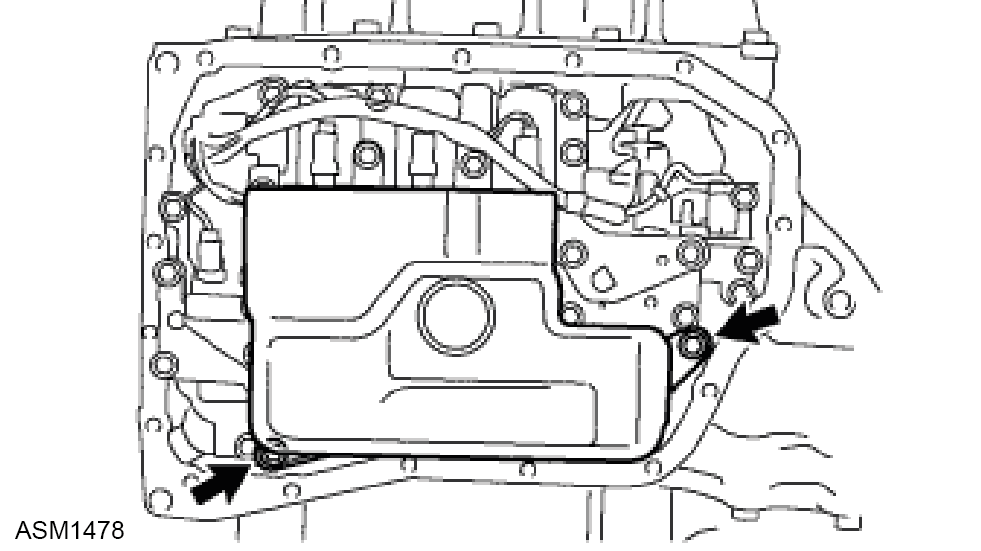
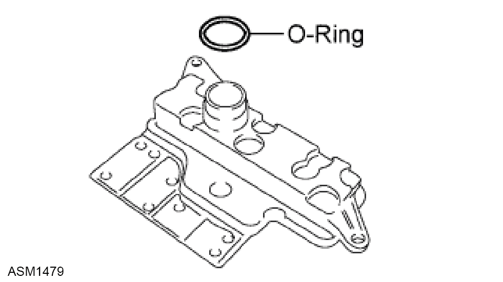
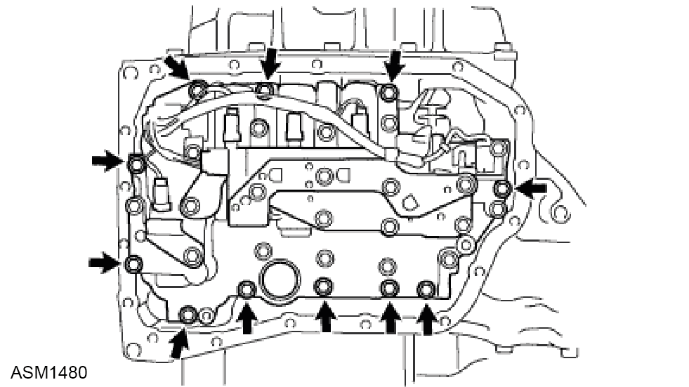
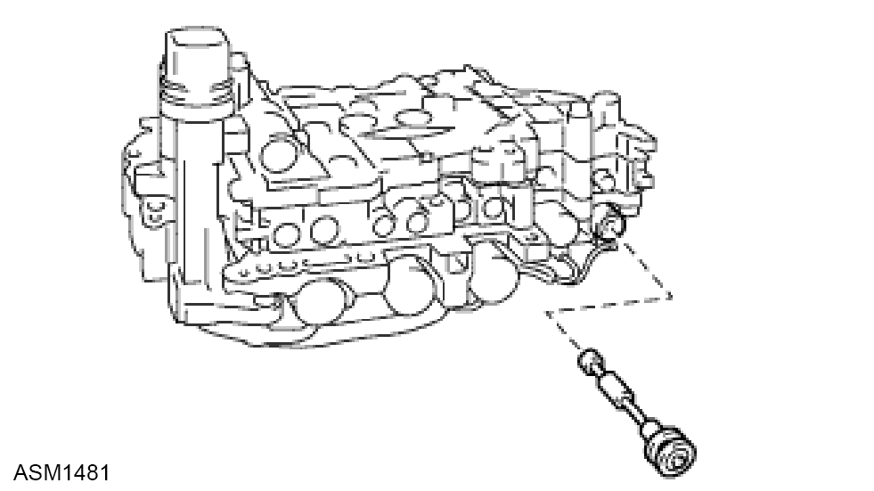
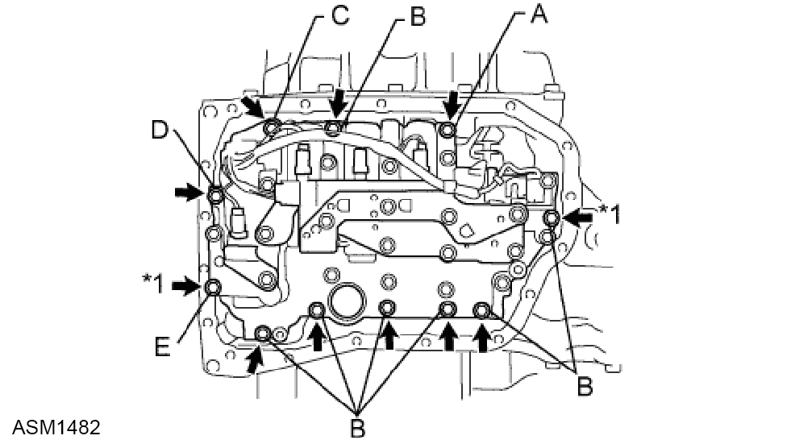

Solenoid Assembly - V6
Print
Operation Code: 47.02.03-02
Removal
- Remove oil pan gasket. Refer to procedure.

- Remove the 2 bolts and oil strainer from the valve body.

- Remove the O-ring from the oil strainer.

- Remove the 11 bolts and valve body from the transaxle.
 CAUTION: When removing the transmission valve body assembly, be careful not to allow the transmission revolution sensor and the transaxle case to interfere each other.
CAUTION: When removing the transmission valve body assembly, be careful not to allow the transmission revolution sensor and the transaxle case to interfere each other.
Installation

- Coat the O-ring of the transmission wire with ATF.

- Confirm that the manual valve lever is positioned as shown in the illustration and install the valve body assembly to the transaxle case with the 11 bolts. Torque 11 Nm.
CAUTION: When installing the transmission valve body assembly, be careful not to allow the transmission revolution sensor and transaxle case to interfere each other.
CAUTION: Be sure to insert the pin of the manual valve lever into the groove on the end of the manual valve.
CAUTION: First, temporarily tighten the bolts marked by (*1) in the illustration because they are positioning bolts.
NOTE: Bolt length:
Bolt A:
25 mm (0.98 in.)
Bolt B:
30 mm (1.18 in.)
Bolt C:
35 mm (1.38 in.)
Bolt D:
45 mm (1.77 in.)
Bolt E:
55 mm (2.17 in.).
- After installation perform a diagnostic read and clear error memory using Lotus Insight tool.